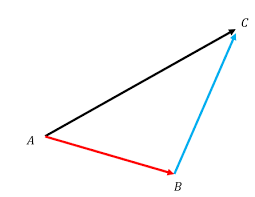

\( ab = a \wedge b + a \cdot b \)
where \( a \), \( b \) are vectors. For some special cases such as when \( a \) and \( b \) are orthogonal geometric product is \( ab = a \wedge b \) and when \( a \) and \( b \) are parallel geometric product is \( ab = a \cdot b \)
We know that square length of a vector \( c \) is its dot product with itself \( c \cdot c \) which is also its geometric product with itself \( cc \).
\( c = a + b \)
In order to find the square length of \( c \) we can calculate \( cc \) geometric product of \( c \) by itself.
\( cc = (a+b)(a+b) = aa + ab + ba + bb \) where \( ab = a \wedge b + a \cdot b \) and \( ba = b \wedge a + b \cdot a \)
We know from the previous article that \( a \wedge b = -b \wedge a \) so terms \( a \wedge b \) and \( b \wedge a \) cancels each other and
\( cc = a \cdot a + b \cdot b + 2 a \cdot b \).
The square length of vector \( c \) is is the sum of square length of vectors \( a \), \( b \) and their dot product.
In case \( a \) and \( b \) are orthogonal, their dot product is zero so square length of \( c \) is just
\( cc = aa + bb == |c|^2 = |a|^2 + |b|^2 \)